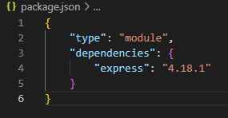

Serving files
HTML
Serving html sends a html file to client.
The clients browser reads the file and displays the contant

Serving static files
app.use(express.static('public')) defines a "root" location where the clientfiles are
Serving html sends a html file to client.
The clients browser reads the file and displays the contant
app.use(express.static('public')) defines a "root" location where the clientfiles are
To use import and not require, then insert ' "type": "module" ' in the package.json file
Arrays in javascript has some loop methods that we can use.
map calls the function for each element of the array and returns the array of results.
The find method looks for a single (first) element that makes the function return true